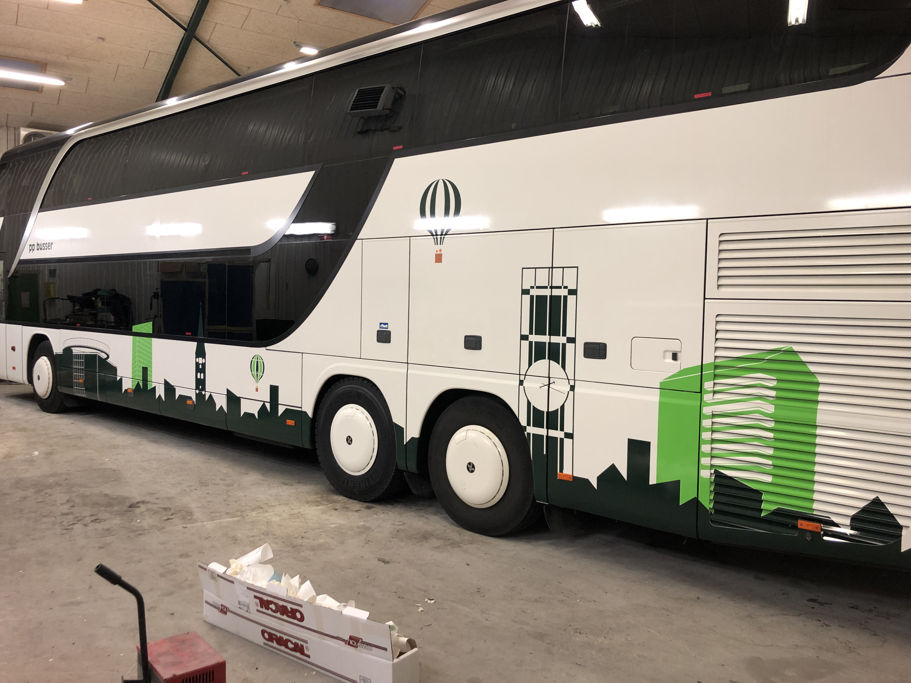

Skilte kan hos os formes og skaleres til dit behov. Vi producere skilte der passer lige til dit behov.
Pyloner er en fremragende måde at markedsføre din virksomhed på. De giver større opmærksomhedsværdi end normale skilte og udstråler kvalitet.
Gadeskilte er en oplagt løsning til forretninger i gader med mange forretninger, alt fra den lokale hovedgade til gågaden i storbyen.
Et systemskilt er essentielt for nemt at kunne vise vej for kunder i butikker eller gæster i diverse virksomheder.
Din virksomhed vil blive lagt mærke til med et godt facadeskilt. Samtidig gør et facadeskilt dit firma genkendeligt.
Folietekster og logoer giver en flot effekt på virksomhedens dører og vinduer. De giver et rent udseende uden baggrund.
Solfilm på bygninger eller biler hjælper med genkendelighed og produktivitetsniveauet. Solfilmen kan være mellem næsten gemmensigtig til helt mørk.
Udover disse nævnte opgaver udfører vi også specialopgaver efter kundens ønske, for mere information ring på tlf eller skriv en mail.